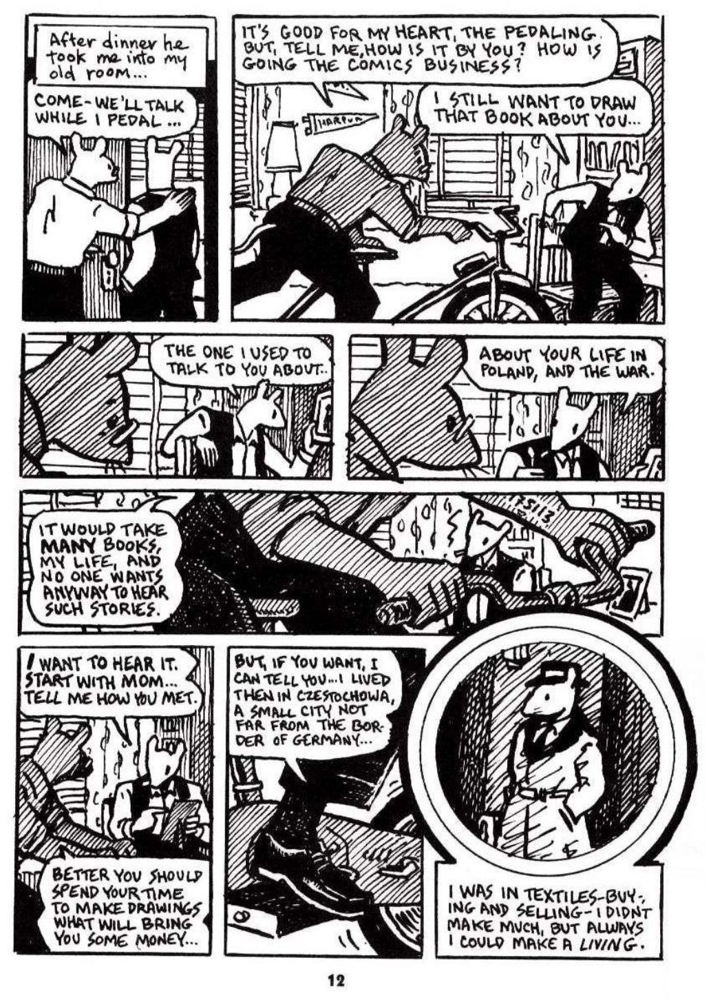

Do this, for each of the 4 questions:
1. Read Read the pages listed (the reader is on the left; on a phone it's above the questions).
2. Check Get the reading check right. If you miss, the choices mix up and you can try again in a few seconds.
3. Write Write 1–2 sentences using the sentence starter.
Done means 4 green checks and 4 answers. Then press Turn in answers at the bottom. No videos are needed.
Content note: These pages show hate, violence, and death. Ask your teacher for help if you need it.

Read each page. Click the page to make it bigger. Open all pages as a PDF ↗
Turn in your work
Your work saves on this device, so you can come back later. Your teacher sees it after you turn it in.